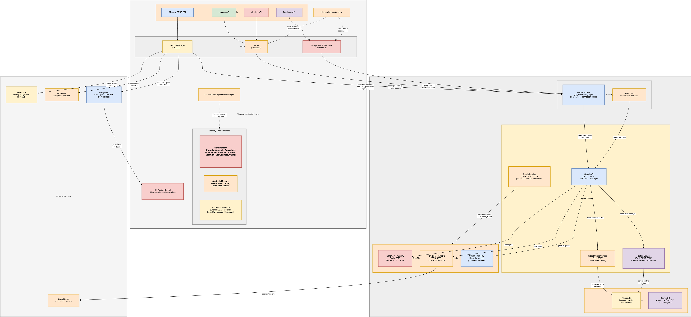
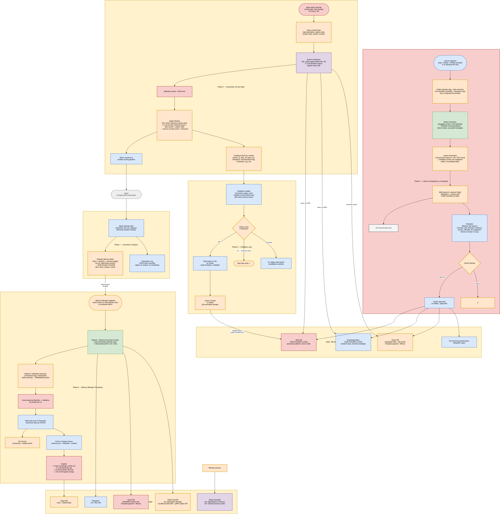

Advanced Agent Memories
Advanced Agent Memories (the MemoryGrid stack) gives agents long-term memory and a way to learn from it. Agents can:
- remember what happened, what is true, how to do things, what they learned, and what worked;
- mine lessons from that experience on a schedule;
- have humans review those lessons before they are trusted;
- apply the trusted lessons when solving new tasks; and
- track whether applied lessons actually helped, retiring the ones that keep failing.
This section documents the agent-memories codebase, which contains four Python packages and the Kubernetes manifests for their databases.
Components
| Component | Package / service | What it does | Docs |
|---|---|---|---|
| Agentic Memory | agentic_memory (library) |
Six memory types — episodic, semantic, procedural, reflective, reward and session context — stored across PostgreSQL, Weaviate, ArangoDB and Redis behind one AgentMemory façade |
Agentic Memory |
| Agent FS | agent_fs (library) |
A git-backed, version-controlled file system per agent: read/write files, commit, branch, tag, diff, restore, revert, stash | Agent FS |
| Learner | memorygrid_learner (FastAPI service) |
Mines lessons from agent experience, accepts injected lessons, enriches them, runs human review, and promotes approved lessons into a Skills store or Knowledge Base (git-versioned) | Learner |
| Incorporator & Feedback | memorygrid_incorporator (FastAPI service) |
At task time, matches the current problem to a promoted lesson, turns it into a concrete action, records feedback, and escalates lessons that keep failing | Incorporator & Feedback |
Memory types at a glance
| Type | Question answered | Store | Docs |
|---|---|---|---|
| Episodic | What happened? | mem.episodic |
Episodic |
| Semantic | What is true? | mem.semantic |
Semantic |
| Procedural | How do I do this? | mem.procedural |
Procedural |
| Reflective | What did I learn? | mem.reflective |
Reflective |
| Reward | What works best? | mem.reward |
Reward |
| Context KV | What is my current session state? | mem.context_kv |
Context KV |
Architecture


The design has three core processes on top of the storage layer:
- Memory Manager (Process 1) — turns raw input into memory documents and places them in a knowledge graph.
- Learner (Process 2) — mines lessons from experience and graduates them through human review.
- Incorporator & Feedback (Process 3) — applies lessons at task time and feeds results back.
Memory lifecycle


- Execution & capture — the agent executes a task and records episodes (Agentic Memory).
- Memory processing — memories are summarized, tagged and placed in a graph (Memory Manager — design only).
- Learning — the Learner collects experience, extracts patterns, writes a lesson, enriches it, and sends it to human review. Approved lessons are promoted to the Skills DB or the Knowledge Base.
- Incorporation — at the next task, the Incorporator matches the task to a promoted lesson and returns a concrete action.
- Feedback loop — the outcome is recorded. A lesson that fails too often is sent back to human review and/or disabled.
Implementation status
The diagrams describe the complete target design. What the code implements today:
| Design element | Status |
|---|---|
| Memory types (episodic, semantic, procedural, reflective, reward, context cache) | Implemented — agentic_memory |
| Git-versioned filesystem | Implemented — agent_fs, plus the Learner's own lessons repository |
| Learner Process: trigger, data collection, pattern extraction, lesson creation, watcher, enrichment, human review, promotion, cross-agent sharing, metrics | Implemented — memorygrid_learner |
| Incorporator: plug-in API, DSL/LLM matching, DSL/LLM applier, feedback DB, threshold escalation (human/auto paths), metrics | Implemented — memorygrid_incorporator |
| Memory Manager (memory document creator, metadata generator, grapher) | Design only (diagram) |
| Team/org-level memory scopes, CRDT concurrent-write layer, shared workspace/blackboard/consensus (diagram) | Design only |
| FrameDB SDK (Redis/TiDB FrameDB via gRPC) | Not used by this code. The Learner talks to TiDB (or SQLite) directly through SQLAlchemy |
| Working memory, world model, strategic memory types | Design only |


Other diagrams: Memory storage · Learner process · Feedback.


How the pieces connect
┌──────────────────────────── agent runtime ───────────────────────────┐
│ │
task ─► Incorporator /invoke ──► action ──► agent executes ──► Incorporator /outcome │
│ │ │ │
│ match against │ remember_episode() │ failures ≥ X │
▼ ▼ ▼ │
Skills DB / Knowledge Base ◄── promote ── Learner ◄── collect ── Agentic Memory re-review / disable
(TiDB + vector + git) ▲ │
└── human review (approve / edit / reject) ◄──────────────┘
- The Learner and the Incorporator share the same Skills/Knowledge Base storage. The Incorporator imports the Learner package and builds its storage objects from the same settings.
- Agentic Memory is the long-term memory library the agent uses directly. The Learner's data collection currently uses in-process demo sources. See Learner → Feeding experience into the Learner for how to connect them.
Getting Started
- Deploy the databases for Agentic Memory: Deployment.
-
Give your agent memory:
```python from agentic_memory import AgentMemory, MemoryConfig from agentic_memory.models import Outcome
with AgentMemory(MemoryConfig()) as mem: ep = mem.remember_episode("Retried the upload with backoff and it succeeded", session_id="s1", agent_id="uploader", outcome=Outcome.SUCCESS) mem.reflect("Backoff fixes transient upload errors", lesson="Retry uploads with exponential backoff", source_episode_id=ep.id) print(mem.recall("upload failures")) ```
-
Run the Learner and the Incorporator services, and connect your agent pipeline to them: End-to-End Example.
Contents
- Agentic Memory — installation, configuration, embeddings, the
AgentMemoryfaçade, storage layout - Agent FS — git-backed agent file system
- Learner — lesson mining, injection, review and promotion
- Incorporator & Feedback — applying lessons and the feedback loop
- Deployment — databases on Kubernetes and running the services
- End-to-End Example — the full learn → apply → feedback loop